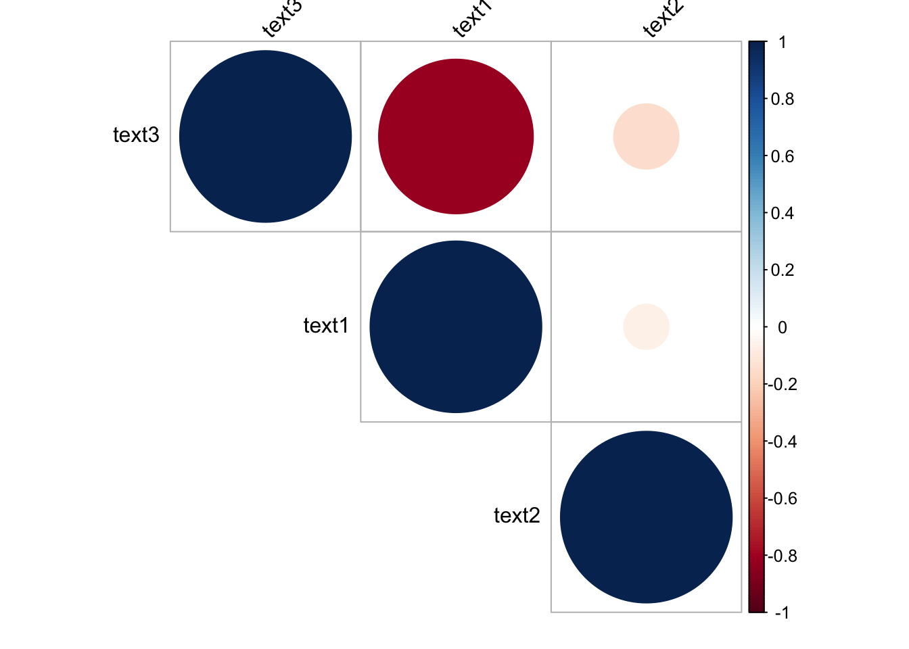

7 Week 4 Demo
7.1 Setup
First, we’ll load the packages we’ll be using in this week’s brief demo.
library(quanteda)
library(quanteda.textstats)
library(quanteda.textplots)
library(tidytext)
library(stringdist)
library(corrplot)
library(janeaustenr)7.2 Character-based similarity
A first measure of text similarity is at the level of characters. We can look for the last time (I promise) at the example from the lecture and see how similarity compares.
We’ll make two sentences and create two character objects from them. These are two thoughts imagined up from our classes.
a <- "We are all very happy to be at a lecture at 11AM"
b <- "We are all even happier that we don’t have two lectures a week"We know that the “longest common substring measure” is, according to the stringdist package documentation, “the longest string that can be obtained by pairing characters from a and b while keeping the order of characters intact.”
And we can easily get different distance/similarity measures by comparing our character objects a and b as so.
## longest common substring distance
stringdist(a, b,
method = "lcs")## [1] 36
## levenshtein distance
stringdist(a, b,
method = "lv")## [1] 27
## jaro distance
stringdist(a, b,
method = "jw", p =0)## [1] 0.25501037.3 Term-based similarity
In this second example from the lecture, we’re taking the opening line of Pride and Prejudice alongside my own versions of this same famous opening line.
We can get the text of Jane Austen very easily thanks to the janeaustenr package.
## similarity and distance example
text <- janeaustenr::prideprejudice
sentences <- text[10:11]
sentence1 <- paste(sentences[1], sentences[2], sep = " ")
sentence1## [1] "It is a truth universally acknowledged, that a single man in possession of a good fortune, must be in want of a wife."We’re then going to specify our alternative versions of this same sentence.
sentence2 <- "Everyone knows that a rich man without wife will want a wife"
sentence3 <- "He's loaded so he wants to get married. Everyone knows that's what happens."Finally, we’re going to convert these into a document feature matrix. We’re doing this with the quanteda package, which is a package that we’ll begin using more and more over coming weeks as the analyses we’re performing get gradually more technical.
dfmat <- dfm(tokens(c(sentence1,
sentence2,
sentence3)),
remove_punct = TRUE, remove = stopwords("english"))
dfmat## Document-feature matrix of: 3 documents, 21 features (58.73% sparse) and 0 docvars.
## features
## docs truth universally acknowledged single man possession good fortune must want
## text1 1 1 1 1 1 1 1 1 1 1
## text2 0 0 0 0 1 0 0 0 0 1
## text3 0 0 0 0 0 0 0 0 0 0
## [ reached max_nfeat ... 11 more features ]What do we see here?
Well, it’s clear that text2 and text3 are not very similar to text1 at all—they share few words. But we also see that text2 does at least contain some words that are shared with text1, which is the original opening line of Jane Austen’s Pride and Prejudice.
So, how do we then measure the similarity or distance between these texts?
The first way is simply by correlating the two sets of ones and zeroes. We can do this with the quanteda.textstats package like so.
## correlation
textstat_simil(dfmat, margin = "documents", method = "correlation")## textstat_simil object; method = "correlation"
## text1 text2 text3
## text1 1.000 -0.117 -0.742
## text2 -0.117 1.000 -0.173
## text3 -0.742 -0.173 1.000And you’ll see that this is the same as what we would get if we manipulated the data into tidy format (rows for words and columns of 1s and 0s).
test <- tidy(dfmat)
test <- test %>%
cast_dfm(term, document, count)
test <- as.data.frame(test)
res <- cor(test[,2:4])
res## text1 text2 text3
## text1 1.0000000 -0.1167748 -0.7416198
## text2 -0.1167748 1.0000000 -0.1732051
## text3 -0.7416198 -0.1732051 1.0000000And we see that as expected text2 is more highly correlated with text1 than is text3.
corrplot(res, type = "upper", order = "hclust",
tl.col = "black", tl.srt = 45)
As for Euclidean distances, we can again use quanteda as so.
textstat_dist(dfmat, margin = "documents", method = "euclidean")## textstat_dist object; method = "euclidean"
## text1 text2 text3
## text1 0 3.74 4.24
## text2 3.74 0 3.74
## text3 4.24 3.74 0Or we could define our own function just so we see what’s going on behind the scenes.
# function for Euclidean distance
euclidean <- function(a,b) sqrt(sum((a - b)^2))
# estimating the distance
euclidean(test$text1, test$text2)## [1] 3.741657
euclidean(test$text1, test$text3)## [1] 4.242641
euclidean(test$text2, test$text3)## [1] 3.741657For Manhattan distance, we could use quanteda again.
textstat_dist(dfmat, margin = "documents", method = "manhattan")## textstat_dist object; method = "manhattan"
## text1 text2 text3
## text1 0 14 18
## text2 14 0 12
## text3 18 12 0Or we could again define our own function.
## manhattan
manhattan <- function(a, b){
dist <- abs(a - b)
dist <- sum(dist)
return(dist)
}
manhattan(test$text1, test$text2)## [1] 14
manhattan(test$text1, test$text3)## [1] 18
manhattan(test$text2, test$text3)## [1] 12And for the cosine similarity, quanteda again makes this straightforward.
textstat_simil(dfmat, margin = "documents", method = "cosine")## textstat_simil object; method = "cosine"
## text1 text2 text3
## text1 1.000 0.364 0
## text2 0.364 1.000 0.228
## text3 0 0.228 1.000But to make clear what’s going on here, we could again write our own function.
## cosine
cos.sim <- function(a, b)
{
return(sum(a*b)/sqrt(sum(a^2)*sum(b^2)) )
}
cos.sim(test$text1, test$text2)## [1] 0.3636364
cos.sim(test$text1, test$text3)## [1] 0
cos.sim(test$text2, test$text3)## [1] 0.22792127.4 Complexity
Note: this section borrows notation from the materials for the texstat_readability() function.
We also talked about different document-level measures of text characteristics. One of these is the “complexity” or readability of a text. One of the most frequently used is Flesch’s Reading Ease Score (Flesch 1948).
This is computed as:
{:}{Flesch’s Reading Ease Score (Flesch 1948). }
We can estimate a readability score for our respective sentences as such. The Flesch score from 1948 is the default.
textstat_readability(sentence1)## document Flesch
## 1 text1 62.10739
textstat_readability(sentence2)## document Flesch
## 1 text1 88.905
textstat_readability(sentence3)## document Flesch
## 1 text1 83.09904What do we see here? The original Austen opening line is marked lower in readability than our more colloquial alternatives.
But there are other alternatives measures we might use. You can check these out by clicking through the links of the function textstat_readability(). Below I display a few of these.
One such is the McLaughlin (1969) “Simple Measure of Gobbledygook, which is based on the recurrence of words with 3 syllables or more and is calculated as:
{:}{Simple Measure of Gobbledygook (SMOG) (McLaughlin 1969).
where = Nwmin3sy = the number of words with 3 syllables or more. This measure is regression equation D in McLaughlin’s original paper.}
We can calculate this for our three sentences as below.
textstat_readability(sentence1, measure = "SMOG")## document SMOG
## 1 text1 13.02387
textstat_readability(sentence2, measure = "SMOG")## document SMOG
## 1 text1 8.841846
textstat_readability(sentence3, measure = "SMOG")## document SMOG
## 1 text1 7.168622Here, again, we see that the original Austen sentence has a higher level of complexity (or gobbledygook!).